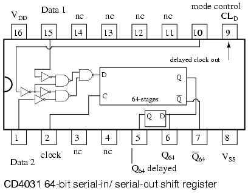
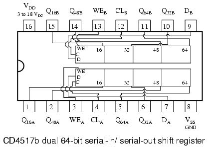
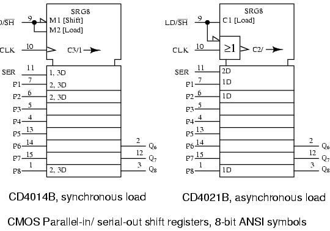
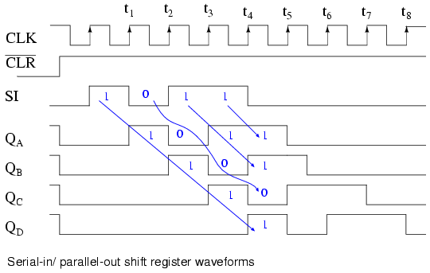
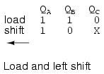
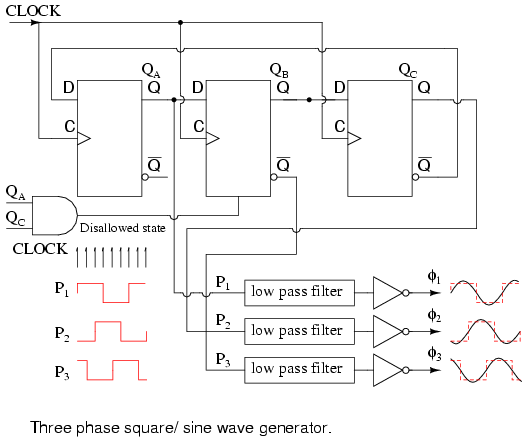
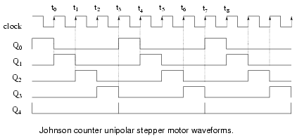

Original author: Dennis Crunkilton
Shift registers, like counters, are a form of sequential logic. Sequential logic, unlike combinational logic is not only affected by the present inputs, but also, by the prior history. In other words, sequential logic remembers past events.
Shift registers produce a discrete delay of a digital signal or waveform. A waveform synchronized to a clock, a repeating square wave, is delayed by "n" discrete clock times, where "n" is the number of shift register stages. Thus, a four stage shift register delays "data in" by four clocks to "data out". The stages in a shift register are delay stages, typically type "D" Flip-Flops or type "JK" Flip-flops.
Formerly, very long (several hundred stages) shift registers served as digital memory. This obsolete application is reminiscent of the acoustic mercury delay lines used as early computer memory.
Serial data transmission, over a distance of meters to kilometers, uses shift registers to convert parallel data to serial form. Serial data communications replaces many slow parallel data wires with a single serial high speed circuit.
Serial data over shorter distances of tens of centimeters, uses shift registers to get data into and out of microprocessors. Numerous peripherals, including analog to digital converters, digital to analog converters, display drivers, and memory, use shift registers to reduce the amount of wiring in circuit boards.
Some specialized counter circuits actually use shift registers to generate repeating waveforms. Longer shift registers, with the help of feedback generate patterns so long that they look like random noise, pseudo-noise.
Basic shift registers are classified by structure according to the following types:
Above we show a block diagram of a serial-in/serial-out shift register, which is 4-stages long. Data at the input will be delayed by four clock periods from the input to the output of the shift register.
Data at "data in", above, will be present at the Stage A output after the first clock pulse. After the second pulse stage A data is transfered to stage B output, and "data in" is transfered to stage A output. After the third clock, stage C is replaced by stage B; stage B is replaced by stage A; and stage A is replaced by "data in". After the fourth clock, the data originally present at "data in" is at stage D, "output". The "first in" data is "first out" as it is shifted from "data in" to "data out".
Data is loaded into all stages at once of a parallel-in/serial-out shift register. The data is then shifted out via "data out" by clock pulses. Since a 4- stage shift register is shown above, four clock pulses are required to shift out all of the data. In the diagram above, stage D data will be present at the "data out" up until the first clock pulse; stage C data will be present at "data out" between the first clock and the second clock pulse; stage B data will be present between the second clock and the third clock; and stage A data will be present between the third and the fourth clock. After the fourth clock pulse and thereafter, successive bits of "data in" should appear at "data out" of the shift register after a delay of four clock pulses.
If four switches were connected to DA through DD, the status could be read into a microprocessor using only one data pin and a clock pin. Since adding more switches would require no additional pins, this approach looks attractive for many inputs.
Above, four data bits will be shifted in from "data in" by four clock pulses and be available at QA through QD for driving external circuitry such as LEDs, lamps, relay drivers, and horns.
After the first clock, the data at "data in" appears at QA. After the second clock, The old QA data appears at QB; QA receives next data from "data in". After the third clock, QB data is at QC. After the fourth clock, QC data is at QD. This stage contains the data first present at "data in". The shift register should now contain four data bits.
A parallel-in/parallel-out shift register combines the function of the parallel-in, serial-out shift register with the function of the serial-in, parallel-out shift register to yield the universal shift register. The "do anything" shifter comes at a price– the increased number of I/O (Input/Output) pins may reduce the number of stages which can be packaged.
Data presented at DA through DD is parallel loaded into the registers. This data at QA through QD may be shifted by the number of pulses presented at the clock input. The shifted data is available at QA through QD. The "mode" input, which may be more than one input, controls parallel loading of data from DA through DD, shifting of data, and the direction of shifting. There are shift registers which will shift data either left or right.
If the serial output of a shift register is connected to the serial input, data can be perpetually shifted around the ring as long as clock pulses are present. If the output is inverted before being fed back as shown above, we do not have to worry about loading the initial data into the "ring counter".
Serial-in, serial-out shift registers delay data by one clock time for each stage. They will store a bit of data for each register. A serial-in, serial-out shift register may be one to 64 bits in length, longer if registers or packages are cascaded.
Below is a single stage shift register receiving data which is not synchronized to the register clock. The "data in" at the D pin of the type D FF (Flip-Flop) does not change levels when the clock changes for low to high. We may want to synchronize the data to a system wide clock in a circuit board to improve the reliability of a digital logic circuit.
The obvious point (as compared to the figure below) illustrated above is that whatever "data in" is present at the D pin of a type D FF is transfered from D to output Q at clock time. Since our example shift register uses positive edge sensitive storage elements, the output Q follows the D input when the clock transitions from low to high as shown by the up arrows on the diagram above. There is no doubt what logic level is present at clock time because the data is stable well before and after the clock edge. This is seldom the case in multi-stage shift registers. But, this was an easy example to start with. We are only concerned with the positive, low to high, clock edge. The falling edge can be ignored. It is very easy to see Q follow D at clock time above. Compare this to the diagram below where the "data in" appears to change with the positive clock edge.
Since "data in" appears to changes at clock time t1 above, what does the type D FF see at clock time? The short over simplified answer is that it sees the data that was present at D prior to the clock. That is what is transfered to Q at clock time t1. The correct waveform is QC. At t1 Q goes to a zero if it is not already zero. The D register does not see a one until time t2, at which time Q goes high.
Since data, above, present at D is clocked to Q at clock time, and Q cannot change until the next clock time, the D FF delays data by one clock period, provided that the data is already synchronized to the clock. The QA waveform is the same as "data in" with a one clock period delay.
A more detailed look at what the input of the type D Flip-Flop sees at clock time follows. Refer to the figure below. Since "data in" appears to changes at clock time (above), we need further information to determine what the D FF sees. If the "data in" is from another shift register stage, another same type D FF, we can draw some conclusions based on data sheet information. Manufacturers of digital logic make available information about their parts in data sheets, formerly only available in a collection called a data book. Data books are still available; though, the manufacturer's web site is the modern source.

The following data was extracted from the CD4006b data sheet for operation at 5VDC, which serves as an example to illustrate timing.
tS is the setup time, the time data must be present before clock time. In this case data must be present at D 100ns prior to the clock. Furthermore, the data must be held for hold time tH=60ns after clock time. These two conditions must be met to reliably clock data from D to Q of the Flip-Flop.
There is no problem meeting the setup time of 60ns as the data at D has been there for the whole previous clock period if it comes from another shift register stage. For example, at a clock frequency of 1 Mhz, the clock period is 1000 µs, plenty of time. Data will actually be present for 1000µs prior to the clock, which is much greater than the minimum required tS of 60ns.
The hold time tH=60ns is met because D connected to Q of another stage cannot change any faster than the propagation delay of the previous stage tP=200ns. Hold time is met as long as the propagation delay of the previous D FF is greater than the hold time. Data at D driven by another stage Q will not change any faster than 200ns for the CD4006b.
To summarize, output Q follows input D at nearly clock time if Flip-Flops are cascaded into a multi-stage shift register.
Three type D Flip-Flops are cascaded Q to D and the clocks paralleled to form a three stage shift register above.
Type JK FFs cascaded Q to J, Q' to K with clocks in parallel to yield an alternate form of the shift register above.
A serial-in/serial-out shift register has a clock input, a data input, and a data output from the last stage. In general, the other stage outputs are not available Otherwise, it would be a serial-in, parallel-out shift register..
The waveforms below are applicable to either one of the preceding two versions of the serial-in, serial-out shift register. The three pairs of arrows show that a three stage shift register temporarily stores 3-bits of data and delays it by three clock periods from input to output.
At clock time t1 a "data in" of 0 is clocked from D to Q of all three stages. In particular, D of stage A sees a logic 0, which is clocked to QA where it remains until time t2.
At clock time t2 a "data in" of 1 is clocked from D to QA. At stages B and C, a 0, fed from preceding stages is clocked to QB and QC.
At clock time t3 a "data in" of 0 is clocked from D to QA. QA goes low and stays low for the remaining clocks due to "data in" being 0. QB goes high at t3 due to a 1 from the previous stage. QC is still low after t3 due to a low from the previous stage.
QC finally goes high at clock t4 due to the high fed to D from the previous stage QB. All earlier stages have 0s shifted into them. And, after the next clock pulse at t5, all logic 1s will have been shifted out, replaced by 0s
We will take a closer look at the following parts available as integrated circuits, courtesy of Texas Instruments. For complete device data sheets follow the links.
The following serial-in/ serial-out shift registers are 4000 series CMOS (Complementary Metal Oxide Semiconductor) family parts. As such, They will accept a VDD, positive power supply of 3-Volts to 15-Volts. The VSS pin is grounded. The maximum frequency of the shift clock, which varies with VDD, is a few megahertz. See the full data sheet for details.

The 18-bit CD4006b consists of two stages of 4-bits and two more stages of 5-bits with a an output tap at 4-bits. Thus, the 5-bit stages could be used as 4-bit shift registers. To get a full 18-bit shift register the output of one shift register must be cascaded to the input of another and so on until all stages create a single shift register as shown below.
A CD4031 64-bit serial-in/ serial-out shift register is shown below. A number of pins are not connected (nc). Both Q and Q' are available from the 64th stage, actually Q64 and Q'64. There is also a Q64 "delayed" from a half stage which is delayed by half a clock cycle. A major feature is a data selector which is at the data input to the shift register.

The "mode control" selects between two inputs: data 1 and data 2. If "mode control" is high, data will be selected from "data 2" for input to the shift register. In the case of "mode control" being logic low, the "data 1" is selected. Examples of this are shown in the two figures below.
The "data 2" above is wired to the Q64 output of the shift register. With "mode control" high, the Q64 output is routed back to the shifter data input D. Data will recirculate from output to input. The data will repeat every 64 clock pulses as shown above. The question that arises is how did this data pattern get into the shift register in the first place?
With "mode control" low, the CD4031 "data 1" is selected for input to the shifter. The output, Q64, is not recirculated because the lower data selector gate is disabled. By disabled we mean that the logic low "mode select" inverted twice to a low at the lower NAND gate prevents it for passing any signal on the lower pin (data 2) to the gate output. Thus, it is disabled.

A CD4517b dual 64-bit shift register is shown above. Note the taps at the 16th, 32nd, and 48th stages. That means that shift registers of those lengths can be configured from one of the 64-bit shifters. Of course, the 64-bit shifters may be cascaded to yield an 80-bit, 96-bit, 112-bit, or 128-bit shift register. The clock CLA and CLB need to be paralleled when cascading the two shifters. WEB and WEB are grounded for normal shifting operations. The data inputs to the shift registers A and B are DA and DB respectively.
Suppose that we require a 16-bit shift register. Can this be configured with the CD4517b? How about a 64-shift register from the same part?
Above we show A CD4517b wired as a 16-bit shift register for section B. The clock for section B is CLB. The data is clocked in at CLB. And the data delayed by 16-clocks is picked of off Q16B. WEB , the write enable, is grounded.
Above we also show the same CD4517b wired as a 64-bit shift register for the independent section A. The clock for section A is CLA. The data enters at CLA. The data delayed by 64-clock pulses is picked up from Q64A. WEA, the write enable for section A, is grounded.
Parallel-in/ serial-out shift registers do everything that the previous serial-in/ serial-out shift registers do plus input data to all stages simultaneously. The parallel-in/ serial-out shift register stores data, shifts it on a clock by clock basis, and delays it by the number of stages times the clock period. In addition, parallel-in/ serial-out really means that we can load data in parallel into all stages before any shifting ever begins. This is a way to convert data from a parallel format to a serial format. By parallel format we mean that the data bits are present simultaneously on individual wires, one for each data bit as shown below. By serial format we mean that the data bits are presented sequentially in time on a single wire or circuit as in the case of the "data out" on the block diagram below.
Below we take a close look at the internal details of a 3-stage parallel-in/ serial-out shift register. A stage consists of a type D Flip-Flop for storage, and an AND-OR selector to determine whether data will load in parallel, or shift stored data to the right. In general, these elements will be replicated for the number of stages required. We show three stages due to space limitations. Four, eight or sixteen bits is normal for real parts.

Above we show the parallel load path when SHIFT/LD' is logic low. The upper NAND gates serving DA DB DC are enabled, passing data to the D inputs of type D Flip-Flops QA QB DC respectively. At the next positive going clock edge, the data will be clocked from D to Q of the three FFs. Three bits of data will load into QA QB DC at the same time.
The type of parallel load just described, where the data loads on a clock pulse is known as synchronous load because the loading of data is synchronized to the clock. This needs to be differentiated from asynchronous load where loading is controlled by the preset and clear pins of the Flip-Flops which does not require the clock. Only one of these load methods is used within an individual device, the synchronous load being more common in newer devices.
The shift path is shown above when SHIFT/LD' is logic high. The lower AND gates of the pairs feeding the OR gate are enabled giving us a shift register connection of SI to DA , QA to DB , QB to DC , QC to SO. Clock pulses will cause data to be right shifted out to SO on successive pulses.
The waveforms below show both parallel loading of three bits of data and serial shifting of this data. Parallel data at DA DB DC is converted to serial data at SO.
What we previously described with words for parallel loading and shifting is now set down as waveforms above. As an example we present 101 to the parallel inputs DAA DBB DCC. Next, the SHIFT/LD' goes low enabling loading of data as opposed to shifting of data. It needs to be low a short time before and after the clock pulse due to setup and hold requirements. It is considerably wider than it has to be. Though, with synchronous logic it is convenient to make it wide. We could have made the active low SHIFT/LD' almost two clocks wide, low almost a clock before t1 and back high just before t3. The important factor is that it needs to be low around clock time t1 to enable parallel loading of the data by the clock.
Note that at t1 the data 101 at DA DB DC is clocked from D to Q of the Flip-Flops as shown at QA QB QC at time t1. This is the parallel loading of the data synchronous with the clock.
Now that the data is loaded, we may shift it provided that SHIFT/LD' is high to enable shifting, which it is prior to t2. At t2 the data 0 at QC is shifted out of SO which is the same as the QC waveform. It is either shifted into another integrated circuit, or lost if there is nothing connected to SO. The data at QB, a 0 is shifted to QC. The 1 at QA is shifted into QB. With "data in" a 0, QA becomes 0. After t2, QA QB QC = 010.
After t3, QA QB QC = 001. This 1, which was originally present at QA after t1, is now present at SO and QC. The last data bit is shifted out to an external integrated circuit if it exists. After t4 all data from the parallel load is gone. At clock t5 we show the shifting in of a data 1 present on the SI, serial input.
Why provide SI and SO pins on a shift register? These connections allow us to cascade shift register stages to provide large shifters than available in a single IC (Integrated Circuit) package. They also allow serial connections to and from other ICs like microprocessors.
Let's take a closer look at parallel-in/ serial-out shift registers available as integrated circuits, courtesy of Texas Instruments. For complete device data sheets follow these the links.
The SN74ALS166 shown above is the closest match of an actual part to the previous parallel-in/ serial out shifter figures. Let us note the minor changes to our figure above. First of all, there are 8-stages. We only show three. All 8-stages are shown on the data sheet available at the link above. The manufacturer labels the data inputs A, B, C, and so on to H. The SHIFT/LOAD control is called SH/LD'. It is abbreviated from our previous terminology, but works the same: parallel load if low, shift if high. The shift input (serial data in) is SER on the ALS166 instead of SI. The clock CLK is controlled by an inhibit signal, CLKINH. If CLKINH is high, the clock is inhibited, or disabled. Otherwise, this "real part" is the same as what we have looked at in detail.
Above is the ANSI (American National Standards Institute) symbol for the SN74ALS166 as provided on the data sheet. Once we know how the part operates, it is convenient to hide the details within a symbol. There are many general forms of symbols. The advantage of the ANSI symbol is that the labels provide hints about how the part operates.
The large notched block at the top of the '74ASL166 is the control section of the ANSI symbol. There is a reset indicted by R. There are three control signals: M1 (Shift), M2 (Load), and C3/1 (arrow) (inhibited clock). The clock has two functions. First, C3 for shifting parallel data wherever a prefix of 3 appears. Second, whenever M1 is asserted, as indicated by the 1 of C3/1 (arrow), the data is shifted as indicated by the right pointing arrow. The slash (/) is a separator between these two functions. The 8-shift stages, as indicated by title SRG8, are identified by the external inputs A, B, C, to H. The internal 2, 3D indicates that data, D, is controlled by M2 [Load] and C3 clock. In this case, we can conclude that the parallel data is loaded synchronously with the clock C3. The upper stage at A is a wider block than the others to accommodate the input SER. The legend 1, 3D implies that SER is controlled by M1 [Shift] and C3 clock. Thus, we expect to clock in data at SER when shifting as opposed to parallel loading.
The ANSI/IEEE basic gate rectangular symbols are provided above for comparison to the more familiar shape symbols so that we may decipher the meaning of the symbology associated with the CLKINH and CLK pins on the previous ANSI SN74ALS166 symbol. The CLK and CLKINH feed an OR gate on the SN74ALS166 ANSI symbol. OR is indicated by => on the rectangular inset symbol. The long triangle at the output indicates a clock. If there was a bubble with the arrow this would have indicated shift on negative clock edge (high to low). Since there is no bubble with the clock arrow, the register shifts on the positive (low to high transition) clock edge. The long arrow, after the legend C3/1 pointing right indicates shift right, which is down the symbol.
Part of the internal logic of the SN74ALS165 parallel-in/ serial-out, asynchronous load shift register is reproduced from the data sheet above. See the link at the beginning of this section the for the full diagram. We have not looked at asynchronous loading of data up to this point. First of all, the loading is accomplished by application of appropriate signals to the Set (preset) and Reset (clear) inputs of the Flip-Flops. The upper NAND gates feed the Set pins of the FFs and also cascades into the lower NAND gate feeding the Reset pins of the FFs. The lower NAND gate inverts the signal in going from the Set pin to the Reset pin.
First, SH/LD' must be pulled Low to enable the upper and lower NAND gates. If SH/LD' were at a logic high instead, the inverter feeding a logic low to all NAND gates would force a High out, releasing the "active low" Set and Reset pins of all FFs. There would be no possibility of loading the FFs.
With SH/LD' held Low, we can feed, for example, a data 1 to parallel input A, which inverts to a zero at the upper NAND gate output, setting FF QA to a 1. The 0 at the Set pin is fed to the lower NAND gate where it is inverted to a 1 , releasing the Reset pin of QA. Thus, a data A=1 sets QA=1. Since none of this required the clock, the loading is asynchronous with respect to the clock. We use an asynchronous loading shift register if we cannot wait for a clock to parallel load data, or if it is inconvenient to generate a single clock pulse.
The only difference in feeding a data 0 to parallel input A is that it inverts to a 1 out of the upper gate releasing Set. This 1 at Set is inverted to a 0 at the lower gate, pulling Reset to a Low, which resets QA=0.
The ANSI symbol for the SN74ALS166 above has two internal controls C1 [LOAD] and C2 clock from the OR function of (CLKINH, CLK). SRG8 says 8-stage shifter. The arrow after C2 indicates shifting right or down. SER input is a function of the clock as indicated by internal label 2D. The parallel data inputs A, B, C to H are a function of C1 [LOAD], indicated by internal label 1D. C1 is asserted when sh/LD' =0 due to the half-arrow inverter at the input. Compare this to the control of the parallel data inputs by the clock of the previous synchronous ANSI SN75ALS166. Note the differences in the ANSI Data labels.

On the CD4014B above, M1 is asserted when LD/SH'=0. M2 is asserted when LD/SH'=1. Clock C3/1 is used for parallel loading data at 2, 3D when M2 is active as indicated by the 2,3 prefix labels. Pins P3 to P7 are understood to have the smae internal 2,3 prefix labels as P2 and P8. At SER, the 1,3D prefix implies that M1 and clock C3 are necessary to input serial data. Right shifting takes place when M1 active is as indicated by the 1 in C3/1 arrow.
The CD4021B is a similar part except for asynchronous parallel loading of data as implied by the lack of any 2 prefix in the data label 1D for pins P1, P2, to P8. Of course, prefix 2 in label 2D at input SER says that data is clocked into this pin. The OR gate inset shows that the clock is controlled by LD/SH'.
The above SN74LS674 internal label SRG 16 indicates 16-bit shift register. The MODE input to the control section at the top of the symbol is labeled 1,2 M3. Internal M3 is a function of input MODE and G1 and G2 as indicated by the 1,2 preceding M3. The base label G indicates an AND function of any such G inputs. Input R/W' is internally labeled G1/2 EN. This is an enable EN (controlled by G1 AND G2) for tristate devices used elsewhere in the symbol. We note that CS' on (pin 1) is internal G2. Chip select CS' also is ANDed with the input CLK to give internal clock C4. The bubble within the clock arrow indicates that activity is on the negative (high to low transition) clock edge. The slash (/) is a separator implying two functions for the clock. Before the slash, C4 indicates control of anything with a prefix of 4. After the slash, the 3' (arrow) indicates shifting. The 3' of C4/3' implies shifting when M3 is de-asserted (MODE=0). The long arrow indicates shift right (down).
Moving down below the control section to the data section, we have external inputs P0-P15, pins (7-11, 13-23). The prefix 3,4 of internal label 3,4D indicates that M3 and the clock C4 control loading of parallel data. The D stands for Data. This label is assumed to apply to all the parallel inputs, though not explicitly written out. Locate the label 3',4D on the right of the P0 (pin7) stage. The complemented-3 indicates that M3=MODE=0 inputs (shifts) SER/Q15 (pin5) at clock time, (4 of 3',4D) corresponding to clock C4. In other words, with MODE=0, we shift data into Q0 from the serial input (pin 6). All other stages shift right (down) at clock time.
Moving to the bottom of the symbol, the triangle pointing right indicates a buffer between Q and the output pin. The Triangle pointing down indicates a tri-state device. We previously stated that the tristate is controlled by enable EN, which is actually G1 AND G2 from the control section. If R/W=0, the tri-state is disabled, and we can shift data into Q0 via SER (pin 6), a detail we omitted above. We actually need MODE=0, R/W'=0, CS'=0
The internal logic of the SN74LS674 and a table summarizing the operation of the control signals is available in the link in the bullet list, top of section.
If R/W'=1, the tristate is enabled, Q15 shifts out SER/Q15 (pin 6) and recirculates to the Q0 stage via the right hand wire to 3',4D. We have assumed that CS' was low giving us clock C4/3' and G2 to ENable the tri-state.
An application of a parallel-in/ serial-out shift register is to read data into a microprocessor.

The Alarm above is controlled by a remote keypad. The alarm box supplies +5V and ground to the remote keypad to power it. The alarm reads the remote keypad every few tens of milliseconds by sending shift clocks to the keypad which returns serial data showing the status of the keys via a parallel-in/ serial-out shift register. Thus, we read nine key switches with four wires. How many wires would be required if we had to run a circuit for each of the nine keys?
A practical application of a parallel-in/ serial-out shift register is to read many switch closures into a microprocessor on just a few pins. Some low end microprocessors only have 6-I/O (Input/Output) pins available on an 8-pin package. Or, we may have used most of the pins on an 84-pin package. We may want to reduce the number of wires running around a circuit board, machine, vehicle, or building. This will increase the reliability of our system. It has been reported that manufacturers who have reduced the number of wires in an automobile produce a more reliable product. In any event, only three microprocessor pins are required to read in 8-bits of data from the switches in the figure above.
We have chosen an asynchronous loading device, the CD4021B because it is easier to control the loading of data without having to generate a single parallel load clock. The parallel data inputs of the shift register are pulled up to +5V with a resistor on each input. If all switches are open, all 1s will be loaded into the shift register when the microprocessor moves the LD/SH' line from low to high, then back low in anticipation of shifting. Any switch closures will apply logic 0s to the corresponding parallel inputs. The data pattern at P1-P7 will be parallel loaded by the LD/SH'=1 generated by the microprocessor software.
The microprocessor generates shift pulses and reads a data bit for each of the 8-bits. This process may be performed totally with software, or larger microprocessors may have one or more serial interfaces to do the task more quickly with hardware. With LD/SH'=0, the microprocessor generates a 0 to 1 transition on the Shift clock line, then reads a data bit on the Serial data in line. This is repeated for all 8-bits.
The SER line of the shift register may be driven by another identical CD4021B circuit if more switch contacts need to be read. In which case, the microprocessor generates 16-shift pulses. More likely, it will be driven by something else compatible with this serial data format, for example, an analog to digital converter, a temperature sensor, a keyboard scanner, a serial read-only memory. As for the switch closures, they may be limit switches on the carriage of a machine, an over-temperature sensor, a magnetic reed switch, a door or window switch, an air or water pressure switch, or a solid state optical interrupter.
A serial-in/parallel-out shift register is similar to the serial-in/ serial-out shift register in that it shifts data into internal storage elements and shifts data out at the serial-out, data-out, pin. It is different in that it makes all the internal stages available as outputs. Therefore, a serial-in/parallel-out shift register converts data from serial format to parallel format. If four data bits are shifted in by four clock pulses via a single wire at data-in, below, the data becomes available simultaneously on the four Outputs QA to QD after the fourth clock pulse.
The practical application of the serial-in/parallel-out shift register is to convert data from serial format on a single wire to parallel format on multiple wires. Perhaps, we will illuminate four LEDs (Light Emitting Diodes) with the four outputs (QA QB QC QD ).

The above details of the serial-in/parallel-out shift register are fairly simple. It looks like a serial-in/ serial-out shift register with taps added to each stage output. Serial data shifts in at SI (Serial Input). After a number of clocks equal to the number of stages, the first data bit in appears at SO (QD) in the above figure. In general, there is no SO pin. The last stage (QD above) serves as SO and is cascaded to the next package if it exists.
If a serial-in/parallel-out shift register is so similar to a serial-in/ serial-out shift register, why do manufacturers bother to offer both types? Why not just offer the serial-in/parallel-out shift register? They actually only offer the serial-in/parallel-out shift register, as long as it has no more than 8-bits. Note that serial-in/ serial-out shift registers come in bigger than 8-bit lengths of 18 to to 64-bits. It is not practical to offer a 64-bit serial-in/parallel-out shift register requiring that many output pins. See waveforms below for above shift register.

The shift register has been cleared prior to any data by CLR', an active low signal, which clears all type D Flip-Flops within the shift register. Note the serial data 1011 pattern presented at the SI input. This data is synchronized with the clock CLK. This would be the case if it is being shifted in from something like another shift register, for example, a parallel-in/ serial-out shift register (not shown here). On the first clock at t1, the data 1 at SI is shifted from D to Q of the first shift register stage. After t2 this first data bit is at QB. After t3 it is at QC. After t4 it is at QD. Four clock pulses have shifted the first data bit all the way to the last stage QD. The second data bit a 0 is at QC after the 4th clock. The third data bit a 1 is at QB. The fourth data bit another 1 is at QA. Thus, the serial data input pattern 1011 is contained in (QD QC QB QA). It is now available on the four outputs.
It will available on the four outputs from just after clock t4 to just before t5. This parallel data must be used or stored between these two times, or it will be lost due to shifting out the QD stage on following clocks t5 to t8 as shown above.
Let's take a closer look at Serial-in/ parallel-out shift registers available as integrated circuits, courtesy of Texas Instruments. For complete device data sheets follow the links.
The 74ALS164A is almost identical to our prior diagram with the exception of the two serial inputs A and B. The unused input should be pulled high to enable the other input. We do not show all the stages above. However, all the outputs are shown on the ANSI symbol below, along with the pin numbers.
The CLK input to the control section of the above ANSI symbol has two internal functions C1, control of anything with a prefix of 1. This would be clocking in of data at 1D. The second function, the arrow after after the slash (/) is right (down) shifting of data within the shift register. The eight outputs are available to the right of the eight registers below the control section. The first stage is wider than the others to accommodate the A&B input.
The above internal logic diagram is adapted from the TI (Texas Instruments) data sheet for the 74AHC594. The type "D" FFs in the top row comprise a serial-in/ parallel-out shift register. This section works like the previously described devices. The outputs (QA' QB' to QH' ) of the shift register half of the device feed the type "D" FFs in the lower half in parallel. QH' (pin 9) is shifted out to any optional cascaded device package.
A single positive clock edge at RCLK will transfer the data from D to Q of the lower FFs. All 8-bits transfer in parallel to the output register (a collection of storage elements). The purpose of the output register is to maintain a constant data output while new data is being shifted into the upper shift register section. This is necessary if the outputs drive relays, valves, motors, solenoids, horns, or buzzers. This feature may not be necessary when driving LEDs as long as flicker during shifting is not a problem.
Note that the 74AHC594 has separate clocks for the shift register (SRCLK) and the output register ( RCLK). Also, the shifter may be cleared by SRCLR and, the output register by RCLR. It desirable to put the outputs in a known state at power-on, in particular, if driving relays, motors, etc. The waveforms below illustrate shifting and latching of data.
The above waveforms show shifting of 4-bits of data into the first four stages of 74AHC594, then the parallel transfer to the output register. In actual fact, the 74AHC594 is an 8-bit shift register, and it would take 8-clocks to shift in 8-bits of data, which would be the normal mode of operation. However, the 4-bits we show saves space and adequately illustrates the operation.
We clear the shift register half a clock prior to t0 with SRCLR'=0. SRCLR' must be released back high prior to shifting. Just prior to t0 the output register is cleared by RCLR'=0. It, too, is released ( RCLR'=1).
Serial data 1011 is presented at the SI pin between clocks t0 and t4. It is shifted in by clocks t1 t2 t3 t4 appearing at internal shift stages QA' QB' QC' QD' . This data is present at these stages between t4 and t5. After t5 the desired data (1011) will be unavailable on these internal shifter stages.
Between t4 and t5 we apply a positive going RCLK transferring data 1011 to register outputs QA QB QC QD . This data will be frozen here as more data (0s) shifts in during the succeeding SRCLKs (t5 to t8). There will not be a change in data here until another RCLK is applied.
The 74AHC595 is identical to the '594 except that the RCLR' is replaced by an OE' enabling a tri-state buffer at the output of each of the eight output register bits. Though the output register cannot be cleared, the outputs may be disconnected by OE'=1. This would allow external pull-up or pull-down resistors to force any relay, solenoid, or valve drivers to a known state during a system power-up. Once the system is powered-up and, say, a microprocessor has shifted and latched data into the '595, the output enable could be asserted (OE'=0) to drive the relays, solenoids, and valves with valid data, but, not before that time.
Above are the proposed ANSI symbols for these devices. C3 clocks data into the serial input (external SER) as indicate by the 3 prefix of 2,3D. The arrow after C3/ indicates shifting right (down) of the shift register, the 8-stages to the left of the '595symbol below the control section. The 2 prefix of 2,3D and 2D indicates that these stages can be reset by R2 (external SRCLR').
The 1 prefix of 1,4D on the '594 indicates that R1 (external RCLR') may reset the output register, which is to the right of the shift register section. The '595, which has an EN at external OE' cannot reset the output register. But, the EN enables tristate (inverted triangle) output buffers. The right pointing triangle of both the '594 and'595 indicates internal buffering. Both the '594 and'595 output registers are clocked by C4 as indicated by 4 of 1,4D and 4D respectively.
The CD4094B is a 3 to 15VDC capable latching shift register alternative to the previous 74AHC594 devices. CLOCK, C1, shifts data in at SERIAL IN as implied by the 1 prefix of 1D. It is also the clock of the right shifting shift register (left half of the symbol body) as indicated by the /(right-arrow) of C1/(arrow) at the CLOCK input.
STROBE, C2 is the clock for the 8-bit output register to the right of the symbol body. The 2 of 2D indicates that C2 is the clock for the output register. The inverted triangle in the output latch indicates that the output is tristated, being enabled by EN3. The 3 preceding the inverted triangle and the 3 of EN3 are often omitted, as any enable (EN) is understood to control the tristate outputs.
QS and QS' are non-latched outputs of the shift register stage. QS could be cascaded to SERIAL IN of a succeeding device.
A real-world application of the serial-in/ parallel-out shift register is to output data from a microprocessor to a remote panel indicator. Or, another remote output device which accepts serial format data.
The figure "Alarm with remote key pad" is repeated here from the parallel-in/ serial-out section with the addition of the remote display. Thus, we can display, for example, the status of the alarm loops connected to the main alarm box. If the Alarm detects an open window, it can send serial data to the remote display to let us know. Both the keypad and the display would likely be contained within the same remote enclosure, separate from the main alarm box. However, we will only look at the display panel in this section.
If the display were on the same board as the Alarm, we could just run eight wires to the eight LEDs along with two wires for power and ground. These eight wires are much less desirable on a long run to a remote panel. Using shift registers, we only need to run five wires- clock, serial data, a strobe, power, and ground. If the panel were just a few inches away from the main board, it might still be desirable to cut down on the number of wires in a connecting cable to improve reliability. Also, we sometimes use up most of the available pins on a microprocessor and need to use serial techniques to expand the number of outputs. Some integrated circuit output devices, such as Digital to Analog converters contain serial-in/ parallel-out shift registers to receive data from microprocessors. The techniques illustrated here are applicable to those parts.
We have chosen the 74AHC594 serial-in/ parallel-out shift register with output register; though, it requires an extra pin, RCLK, to parallel load the shifted-in data to the output pins. This extra pin prevents the outputs from changing while data is shifting in. This is not much of a problem for LEDs. But, it would be a problem if driving relays, valves, motors, etc.
Code executed within the microprocessor would start with 8-bits of data to be output. One bit would be output on the "Serial data out" pin, driving SER of the remote 74AHC594. Next, the microprocessor generates a low to high transition on "Shift clock", driving SRCLK of the '595 shift register. This positive clock shifts the data bit at SER from "D" to "Q" of the first shift register stage. This has no effect on the QA LED at this time because of the internal 8-bit output register between the shift register and the output pins (QA to QH). Finally, "Shift clock" is pulled back low by the microprocessor. This completes the shifting of one bit into the '595.
The above procedure is repeated seven more times to complete the shifting of 8-bits of data from the microprocessor into the 74AHC594 serial-in/ parallel-out shift register. To transfer the 8-bits of data within the internal '595 shift register to the output requires that the microprocessor generate a low to high transition on RCLK, the output register clock. This applies new data to the LEDs. The RCLK needs to be pulled back low in anticipation of the next 8-bit transfer of data.
The data present at the output of the '595 will remain until the process in the above two paragraphs is repeated for a new 8-bits of data. In particular, new data can be shifted into the '595 internal shift register without affecting the LEDs. The LEDs will only be updated with new data with the application of the RCLK rising edge.
What if we need to drive more than eight LEDs? Simply cascade another 74AHC594 SER pin to the QH' of the existing shifter. Parallel the SRCLK and RCLK pins. The microprocessor would need to transfer 16-bits of data with 16-clocks before generating an RCLK feeding both devices.
The discrete LED indicators, which we show, could be 7-segment LEDs. Though, there are LSI (Large Scale Integration) devices capable of driving several 7-segment digits. This device accepts data from a microprocessor in a serial format, driving more LED segments than it has pins by by multiplexing the LEDs. For example, see link below for MAX6955
The purpose of the parallel-in/ parallel-out shift register is to take in parallel data, shift it, then output it as shown below. A universal shift register is a do-everything device in addition to the parallel-in/ parallel-out function.
Above we apply four bit of data to a parallel-in/ parallel-out shift register at DA DB DC DD. The mode control, which may be multiple inputs, controls parallel loading vs shifting. The mode control may also control the direction of shifting in some real devices. The data will be shifted one bit position for each clock pulse. The shifted data is available at the outputs QA QB QC QD . The "data in" and "data out" are provided for cascading of multiple stages. Though, above, we can only cascade data for right shifting. We could accommodate cascading of left-shift data by adding a pair of left pointing signals, "data in" and "data out", above.
The internal details of a right shifting parallel-in/ parallel-out shift register are shown below. The tri-state buffers are not strictly necessary to the parallel-in/ parallel-out shift register, but are part of the real-world device shown below.
The 74LS395 so closely matches our concept of a hypothetical right shifting parallel-in/ parallel-out shift register that we use an overly simplified version of the data sheet details above. See the link to the full data sheet more more details, later in this chapter.
LD/SH' controls the AND-OR multiplexer at the data input to the FF's. If LD/SH'=1, the upper four AND gates are enabled allowing application of parallel inputs DA DB DC DD to the four FF data inputs. Note the inverter bubble at the clock input of the four FFs. This indicates that the 74LS395 clocks data on the negative going clock, which is the high to low transition. The four bits of data will be clocked in parallel from DA DB DC DD to QA QB QC QD at the next negative going clock. In this "real part", OC' must be low if the data needs to be available at the actual output pins as opposed to only on the internal FFs.
The previously loaded data may be shifted right by one bit position if LD/SH'=0 for the succeeding negative going clock edges. Four clocks would shift the data entirely out of our 4-bit shift register. The data would be lost unless our device was cascaded from QD' to SER of another device.

Above, a data pattern is presented to inputs DA DB DC DD. The pattern is loaded to QA QB QC QD . Then it is shifted one bit to the right. The incoming data is indicated by X, meaning the we do no know what it is. If the input (SER) were grounded, for example, we would know what data (0) was shifted in. Also shown, is right shifting by two positions, requiring two clocks.
The above figure serves as a reference for the hardware involved in right shifting of data. It is too simple to even bother with this figure, except for comparison to more complex figures to follow.
Right shifting of data is provided above for reference to the previous right shifter.
If we need to shift left, the FFs need to be rewired. Compare to the previous right shifter. Also, SI and SO have been reversed. SI shifts to QC. QC shifts to QB. QB shifts to QA. QA leaves on the SO connection, where it could cascade to another shifter SI. This left shift sequence is backwards from the right shift sequence.

Above we shift the same data pattern left by one bit.
There is one problem with the "shift left" figure above. There is no market for it. Nobody manufactures a shift-left part. A "real device" which shifts one direction can be wired externally to shift the other direction. Or, should we say there is no left or right in the context of a device which shifts in only one direction. However, there is a market for a device which will shift left or right on command by a control line. Of course, left and right are valid in that context.
What we have above is a hypothetical shift register capable of shifting either direction under the control of L'/R. It is setup with L'/R=1 to shift the normal direction, right. L'/R=1 enables the multiplexer AND gates labeled R. This allows data to follow the path illustrated by the arrows, when a clock is applied. The connection path is the same as the"too simple" "shift right" figure above.
Data shifts in at SR, to QA, to QB, to QC, where it leaves at SR cascade. This pin could drive SR of another device to the right.
What if we change L'/R to L'/R=0?
With L'/R=0, the multiplexer AND gates labeled L are enabled, yielding a path, shown by the arrows, the same as the above "shift left" figure. Data shifts in at SL, to QC, to QB, to QA, where it leaves at SL cascade. This pin could drive SL of another device to the left.
The prime virtue of the above two figures illustrating the "shift left/ right register" is simplicity. The operation of the left right control L'/R=0 is easy to follow. A commercial part needs the parallel data loading implied by the section title. This appears in the figure below.
Now that we can shift both left and right via L'/R, let us add SH/LD', shift/ load, and the AND gates labeled "load" to provide for parallel loading of data from inputs DA DB DC. When SH/LD'=0, AND gates R and L are disabled, AND gates "load" are enabled to pass data DA DB DC to the FF data inputs. the next clock CLK will clock the data to QA QB QC. As long as the same data is present it will be re-loaded on succeeding clocks. However, data present for only one clock will be lost from the outputs when it is no longer present on the data inputs. One solution is to load the data on one clock, then proceed to shift on the next four clocks. This problem is remedied in the 74ALS299 by the addition of another AND gate to the multiplexer.
If SH/LD' is changed to SH/LD'=1, the AND gates labeled "load" are disabled, allowing the left/ right control L'/R to set the direction of shift on the L or R AND gates. Shifting is as in the previous figures.
The only thing needed to produce a viable integrated device is to add the fourth AND gate to the multiplexer as alluded for the 74ALS299. This is shown in the next section for that part.
Let's take a closer look at Serial-in/ parallel-out shift registers available as integrated circuits, courtesy of Texas Instruments. For complete device data sheets, follow the links.
We have already looked at the internal details of the SN74LS395A, see above previous figure, 74LS395 parallel-in/ parallel-out shift register with tri-state output. Directly above is the ANSI symbol for the 74LS395.
Why only 4-bits, as indicated by SRG4 above? Having both parallel inputs, and parallel outputs, in addition to control and power pins, does not allow for any more I/O (Input/Output) bits in a 16-pin DIP (Dual Inline Package).
R indicates that the shift register stages are reset by input CLR' (active low- inverting half arrow at input) of the control section at the top of the symbol. OC', when low, (invert arrow again) will enable (EN4) the four tristate output buffers (QA QB QC QD ) in the data section. Load/shift' (LD/SH') at pin (7) corresponds to internals M1 (load) and M2 (shift). Look for prefixes of 1 and 2 in the rest of the symbol to ascertain what is controlled by these.
The negative edge sensitive clock (indicated by the invert arrow at pin-10) C3/2has two functions. First, the 3 of C3/2 affects any input having a prefix of 3, say 2,3D or 1,3D in the data section. This would be parallel load at A, B, C, D attributed to M1 and C3 for 1,3D. Second, 2 of C3/2-right-arrow indicates data clocking wherever 2 appears in a prefix (2,3D at pin-2). Thus we have clocking of data at SER into QA with mode 2 . The right arrow after C3/2 accounts for shifting at internal shift register stages QA QB QC QD.
The right pointing triangles indicate buffering; the inverted triangle indicates tri-state, controlled by the EN4. Note, all the 4s in the symbol associated with the EN are frequently omitted. Stages QB QC are understood to have the same attributes as QD. QD' cascades to the next package's SER to the right.
The table above, condensed from the data '299 data sheet, summarizes the operation of the 74ALS299 universal shift/ storage register. Follow the '299 link above for full details. The Multiplexer gates R, L, load operate as in the previous "shift left/ right register" figures. The difference is that the mode inputs S1 and S0 select shift left, shift right, and load with mode set to S1 S0 = to 01, 10, and 11respectively as shown in the table, enabling multiplexer gates L, R, and load respectively. See table. A minor difference is the parallel load path from the tri-state outputs. Actually the tri-state buffers are (must be) disabled by S1 S0 = 11 to float the I/O bus for use as inputs. A bus is a collection of similar signals. The inputs are applied to A, B through H (same pins as QA, QB, through QH) and routed to the load gate in the multiplexers, and on the the D inputs of the FFs. Data is parallel load on a clock pulse.
The one new multiplexer gate is the AND gate labeled hold, enabled by S1 S0 = 00. The hold gate enables a path from the Q output of the FF back to the hold gate, to the D input of the same FF. The result is that with mode S1 S0 = 00, the output is continuously re-loaded with each new clock pulse. Thus, data is held. This is summarized in the table.
To read data from outputs QA, QB, through QH, the tri-state buffers must be enabled by OE2', OE1' =00 and mode =S1 S0 = 00, 01, or 10. That is, mode is anything except load. See second table.
Right shift data from a package to the left, shifts in on the SR input. Any data shifted out to the right from stage QH cascades to the right via QH'. This output is unaffected by the tri-state buffers. The shift right sequence for S1 S0 = 10 is:
SR > QA > QB > QC > QD > QE > QF > QG > QH (QH')
Left shift data from a package to the right shifts in on the SL input. Any data shifted out to the left from stage QA cascades to the left via QA', also unaffected by the tri-state buffers. The shift left sequence for S1 S0 = 01 is:
(QA') QA < QB < QC < QD < QE < QF < QG < QH (QSL')
Shifting may take place with the tri-state buffers disabled by one of OE2' or OE1' = 1. Though, the register contents outputs will not be accessible. See table.
The "clean" ANSI symbol for the SN74ALS299 parallel-in/ parallel-out 8-bit universal shift register with tri-state output is shown for reference above.
The annotated version of the ANSI symbol is shown to clarify the terminology contained therein. Note that the ANSI mode (S0 S1) is reversed from the order (S1 S0) used in the previous table. That reverses the decimal mode numbers (1 & 2). In any event, we are in complete agreement with the official data sheet, copying this inconsistency.
The Alarm with remote keypad block diagram is repeated below. Previously, we built the keypad reader and the remote display as separate units. Now we will combine both the keypad and display into a single unit using a universal shift register. Though separate in the diagram, the Keypad and Display are both contained within the same remote enclosure.
We will parallel load the keyboard data into the shift register on a single clock pulse, then shift it out to the main alarm box. At the same time , we will shift LED data from the main alarm to the remote shift register to illuminate the LEDs. We will be simultaneously shifting keyboard data out and LED data into the shift register.
Eight LEDs and current limiting resistors are connected to the eight I/O pins of the 74ALS299 universal shift register. The LEDS can only be driven during Mode 3 with S1=0 S0=0. The OE1' and OE2' tristate enables are grounded to permenantly enable the tristate outputs during modes 0, 1, 2. That will cause the LEDS to light (flicker) during shifting. If this were a problem the EN1' and EN2' could be ungrounded and paralleled with S1 and S0 respectively to only enable the tristate buffers and light the LEDS during hold, mode 3. Let's keep it simple for this example.
During parallel loading, S0=1 inverted to a 0, enables the octal tristate buffers to ground the switch wipers. The upper, open, switch contacts are pulled up to logic high by the resister-LED combination at the eight inputs. Any switch closure will short the input low. We parallel load the switch data into the '299 at clock t0 when both S0 and S1 are high. See waveforms below.
Once S0 goes low, eight clocks (t0 tot8) shift switch closure data out of the '299 via the Qh' pin. At the same time, new LED data is shifted in at SR of the 299 by the same eight clocks. The LED data replaces the switch closure data as shifting proceeds.
After the 8th shift clock, t8, S1 goes low to yield hold mode (S1 S0 = 00). The data in the shift register remains the same even if there are more clocks, for example, T9, t10, etc. Where do the waveforms come from? They could be generated by a microprocessor if the clock rate were not over 100 kHz, in which case, it would be inconvenient to generate any clocks after t8. If the clock was in the megahertz range, the clock would run continuously. The clock, S1 and S0 would be generated by digital logic, not shown here.
If the output of a shift register is fed back to the input. a ring counter results. The data pattern contained within the shift register will recirculate as long as clock pulses are applied. For example, the data pattern will repeat every four clock pulses in the figure below. However, we must load a data pattern. All 0's or all 1's doesn't count. Is a continuous logic level from such a condition useful?
We make provisions for loading data into the parallel-in/ serial-out shift register configured as a ring counter below. Any random pattern may be loaded. The most generally useful pattern is a single 1.

Loading binary 1000 into the ring counter, above, prior to shifting yields a viewable pattern. The data pattern for a single stage repeats every four clock pulses in our 4-stage example. The waveforms for all four stages look the same, except for the one clock time delay from one stage to the next. See figure below.
The circuit above is a divide by 4 counter. Comparing the clock input to any one of the outputs, shows a frequency ratio of 4:1. How may stages would we need for a divide by 10 ring counter? Ten stages would recirculate the 1 every 10 clock pulses.
An alternate method of initializing the ring counter to 1000 is shown above. The shift waveforms are identical to those above, repeating every fourth clock pulse. The requirement for initialization is a disadvantage of the ring counter over a conventional counter. At a minimum, it must be initialized at power-up since there is no way to predict what state flip-flops will power up in. In theory, initialization should never be required again. In actual practice, the flip-flops could eventually be corrupted by noise, destroying the data pattern. A "self correcting" counter, like a conventional synchronous binary counter would be more reliable.
The above binary synchronous counter needs only two stages, but requires decoder gates. The ring counter had more stages, but was self decoding, saving the decode gates above. Another disadvantage of the ring counter is that it is not "self starting". If we need the decoded outputs, the ring counter looks attractive, in particular, if most of the logic is in a single shift register package. If not, the conventional binary counter is less complex without the decoder.
The waveforms decoded from the synchronous binary counter are identical to the previous ring counter waveforms. The counter sequence is (QA QB) = (00 01 10 11).
The switch-tail ring counter, also know as the Johnson counter, overcomes some of the limitations of the ring counter. Like a ring counter a Johnson counter is a shift register fed back on its' self. It requires half the stages of a comparable ring counter for a given division ratio. If the complement output of a ring counter is fed back to the input instead of the true output, a Johnson counter results. The difference between a ring counter and a Johnson counter is which output of the last stage is fed back (Q or Q'). Carefully compare the feedback connection below to the previous ring counter.
This "reversed" feedback connection has a profound effect upon the behavior of the otherwise similar circuits. Recirculating a single 1 around a ring counter divides the input clock by a factor equal to the number of stages. Whereas, a Johnson counter divides by a factor equal to twice the number of stages. For example, a 4-stage ring counter divides by 4. A 4-stage Johnson counter divides by 8.
Start a Johnson counter by clearing all stages to 0s before the first clock. This is often done at power-up time. Referring to the figure below, the first clock shifts three 0s from ( QA QB QC) to the right into ( QB QC QD). The 1 at QD' (the complement of Q) is shifted back into QA. Thus, we start shifting 1s to the right, replacing the 0s. Where a ring counter recirculated a single 1, the 4-stage Johnson counter recirculates four 0s then four 1s for an 8-bit pattern, then repeats.
The above waveforms illustrates that multi-phase square waves are generated by a Johnson counter. The 4-stage unit above generates four overlapping phases of 50% duty cycle. How many stages would be required to generate a set of three phase waveforms? For example, a three stage Johnson counter, driven by a 360 Hertz clock would generate three 120o phased square waves at 60 Hertz.
The outputs of the flop-flops in a Johnson counter are easy to decode to a single state. Below for example, the eight states of a 4-stage Johnson counter are decoded by no more than a two input gate for each of the states. In our example, eight of the two input gates decode the states for our example Johnson counter.
No matter how long the Johnson counter, only 2-input decoder gates are needed. Note, we could have used uninverted inputs to the AND gates by changing the gate inputs from true to inverted at the FFs, Q to Q', (and vice versa). However, we are trying to make the diagram above match the data sheet for the CD4022B, as closely as practical.
Above, our four phased square waves QA to QD are decoded to eight signals (G0 to G7) active during one clock period out of a complete 8-clock cycle. For example, G0 is active high when both QA and QD are low. Thus, pairs of the various register outputs define each of the eight states of our Johnson counter example.
Above is the more complete internal diagram of the CD4022B Johnson counter. See the manufacturers' data sheet for minor details omitted. The major new addition to the diagram as compared to previous figures is the disallowed state detector composed of the two NOR gates. Take a look at the inset state table. There are 8-permissible states as listed in the table. Since our shifter has four flip-flops, there are a total of 16-states, of which there are 8-disallowed states. That would be the ones not listed in the table.
In theory, we will not get into any of the disallowed states as long as the shift register is RESET before first use. However, in the "real world" after many days of continuous operation due to unforeseen noise, power line disturbances, near lightning strikes, etc, the Johnson counter could get into one of the disallowed states. For high reliability applications, we need to plan for this slim possibility. More serious is the case where the circuit is not cleared at power-up. In this case there is no way to know which of the 16-states the circuit will power up in. Once in a disallowed state, the Johnson counter will not return to any of the permissible states without intervention. That is the purpose of the NOR gates.
Examine the table for the sequence (QA QB QC) = (010). Nowhere does this sequence appear in the table of allowed states. Therefore (010) is disallowed. It should never occur. If it does, the Johnson counter is in a disallowed state, which it needs to exit to any allowed state. Suppose that (QA QB QC) = (010). The second NOR gate will replace QB = 1 with a 0 at the D input to FF QC. In other words, the offending 010 is replaced by 000. And 000, which does appear in the table, will be shifted right. There are may triple-0 sequences in the table. This is how the NOR gates get the Johnson counter out of a disallowed state to an allowed state.
Not all disallowed states contain a 010 sequence. However, after a few clocks, this sequence will appear so that any disallowed states will eventually be escaped. If the circuit is powered-up without a RESET, the outputs will be unpredictable for a few clocks until an allowed state is reached. If this is a problem for a particular application, be sure to RESET on power-up.
A pair of integrated circuit Johnson counter devices with the output states decoded is available. We have already looked at the CD4017 internal logic in the discussion of Johnson counters. The 4000 series devices can operate from 3V to 15V power supplies. The the 74HC' part, designed for a TTL compatiblity, can operate from a 2V to 6V supply, count faster, and has greater output drive capability. For complete device data sheets, follow the links.
CD4017 Johnson counter with 10 decoded outputs
CD4022 Johnson counter with 8 decoded outputs
The ANSI symbols for the modulo-10 (divide by 10) and modulo-8 Johnson counters are shown above. The symbol takes on the characteristics of a counter rather than a shift register derivative, which it is. Waveforms for the CD4022 modulo-8 and operation were shown previously. The CD4017B/ 74HC4017 decade counter is a 5-stage Johnson counter with ten decoded outputs. The operation and waveforms are similar to the CD4017. In fact, the CD4017 and CD4022 are both detailed on the same data sheet. See above links. The 74HC4017 is a more modern version of the decade counter.
These devices are used where decoded outputs are needed instead of the binary or BCD (Binary Coded Decimal) outputs found on normal counters. By decoded, we mean one line out of the ten lines is active at a time for the '4017 in place of the four bit BCD code out of conventional counters. See previous waveforms for 1-of-8 decoding for the '4022 Octal Johnson counter.
The above Johnson counter shifts a lighted LED each fifth of a second around the ring of ten. Note that the 74HC4017 is used instead of the '40017 because the former part has more current drive capability. From the data sheet, (at the link above) operating at VCC= 5V, the VOH= 4.6V at 4ma. In other words, the outputs can supply 4 ma at 4.6 V to drive the LEDs. Keep in mind that LEDs are normally driven with 10 to 20 ma of current. Though, they are visible down to 1 ma. This simple circuit illustrates an application of the 'HC4017. Need a bright display for an exhibit? Then, use inverting buffers to drive the cathodes of the LEDs pulled up to the power supply by lower value anode resistors.
The 555 timer, serving as an astable multivibrator, generates a clock frequency determined by R1 R2 C1. This drives the 74HC4017 a step per clock as indicated by a single LED illuminated on the ring. Note, if the 555 does not reliably drive the clock pin of the '4015, run it through a single buffer stage between the 555 and the '4017. A variable R2 could change the step rate. The value of decoupling capacitor C2 is not critical. A similar capacitor should be applied across the power and ground pins of the '4017.

The Johnson counter above generates 3-phase square waves, phased 60o apart with respect to (QA QB QC). However, we need 120o phased waveforms of power applications (see Volume II, AC). Choosing P1=QA P2=QC P3=QB' yields the 120o phasing desired. See figure below. If these (P1 P2 P3) are low-pass filtered to sine waves and amplified, this could be the beginnings of a 3-phase power supply. For example, do you need to drive a small 3-phase 400 Hz aircraft motor? Then, feed 6x 400Hz to the above circuit CLOCK. Note that all these waveforms are 50% duty cycle.
The circuit below produces 3-phase nonoverlapping, less than 50% duty cycle, waveforms for driving 3-phase stepper motors.
Above we decode the overlapping outputs QA QB QC to non-overlapping outputs P0 P1 P2 as shown below. These waveforms drive a 3-phase stepper motor after suitable amplification from the milliamp level to the fractional amp level using the ULN2003 drivers shown above, or the discrete component Darlington pair driver shown in the circuit which follow. Not counting the motor driver, this circuit requires three IC (Integrated Circuit) packages: two dual type "D" FF packages and a quad NAND gate.
A single CD4017, above, generates the required 3-phase stepper waveforms in the circuit above by clearing the Johnson counter at count 3. Count 3 persists for less than a microsecond before it clears its' self. The other counts (Q0=G0 Q1=G1 Q2=G2) remain for a full clock period each.
The Darlington bipolar transistor drivers shown above are a substitute for the internal circuitry of the ULN2003. The design of drivers is beyond the scope of this digital electronics chapter. Either driver may be used with either waveform generator circuit.
The above waceforms make the most sense in the context of the internal logic of the CD4017 shown earlier in this section. Though, the AND gating equations for the internal decoder are shown. The signals QA QB QC are Johnson counter direct shift register outputs not available on pin-outs. The QD waveform shows resetting of the '4017 every three clocks. Q0 Q1 Q2, etc. are decoded outputs which actually are available at output pins.
Above we generate waveforms for driving a unipolar stepper motor, which only requires one polarity of driving signal. That is, we do not have to reverse the polarity of the drive to the windings. This simplifies the power driver between the '4017 and the motor. Darlington pairs from a prior diagram may be substituted for the ULN3003.

Once again, the CD4017B generates the required waveforms with a reset after the teminal count. The decoded outputs Q0 Q1 Q2 Q3 sucessively drive the stepper motor windings, with Q4 reseting the counter at the end of each group of four pulses.
DataSheetCatalog.com http://www.datasheetcatalog.com/
http://www.st.com/stonline/psearch/index.htm select standard logics
http://www.st.com/stonline/books/pdf/docs/2069.pdfhttp://www.ti.com/ (Products, Logic, Product Tree)
Lessons In Electric Circuits copyright (C) 2000-2023 Tony R. Kuphaldt, under the terms and conditions of the CC BY License.